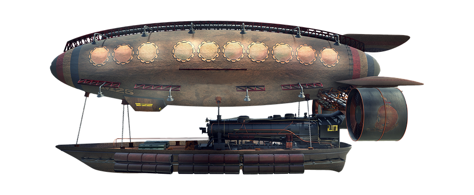
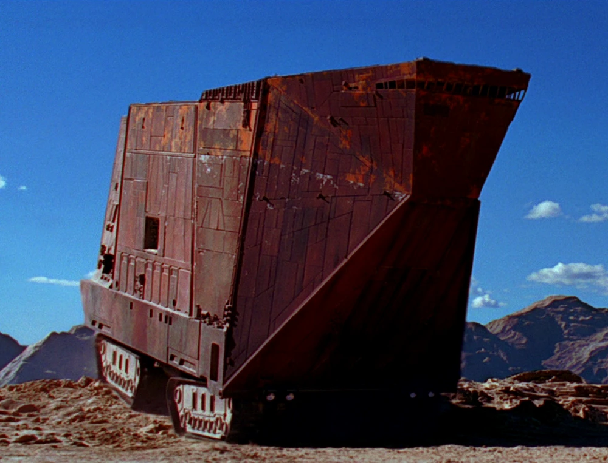

Thirteenth Session
Air Assault
Summerday +408 hours
Dramatis Personae
- Benjamin, a 7th-level Wood Elf Ranger
- Calmul Rhoqiroth, a 7th-level Dragonborn Artificer
- CoralKing, a 6th-level Gnome Monk
- Geral Bryn, a 7th-level Human Fighter
- Orky, a 6th-level Half-Elf Paladin
- Steve, a 7th-level Halfling Rogue
- Tasbros, a 7th-level Sky Elf Sorcerer
- Tysnera, a 7th-level Sky Elf Wizard
- Viker, a 7th-level Eladrin Druid
- Wulrif, a 6th-level Human Warlock
From the journal of Dame Orky
Benjamin thinks the Oozes came from the Underdark, but we can't find any large passages.
We decide to contract some Dwarves to plug up any holes to the Underdark we find. We collect our treasure from the Wraith to hire a militia. We got 150 gp per person. 1 gp per cycle is a ton of money for a solider is a lot of money. Geral is considering paying them 1 sp per day.
Gundren pulls Geral aside and shows him an Elven airship (~150 ft long) that has landed and the crew is approaching us. They seem friendly. Tasbros talks to them and they said they notice we activated the Spell Forge and he wants to trade so they can access items of power. Geral asks Gundren who built the Spell Forge. He doesn't know, but thinks the Elves and Dwarves had an agreement previously. Geral asks Airship Captain how he knew we cleared it. He said it sang to them along the Ley Lines as soon as it was freed. He says his name is Varbation Starsight and the Elendil is his Airship. Geral introduces himself and shows interest in creating a trade agreement. Varbation offers 5% of the value of the items they make. Geral mentions the Drow we captured to Varbation, who will take it to the High Courts of Judgement. An Elven Air Marshall walks over to the Drow and puts some sort of magical cuffs on the Drow, preventing spellcasting. Geral talks to Gundren about what happened with the Wraith. He agreed that we should find some way to let him pass on. Gundren seems suspicious that this creature is a Wraith, he thinks it could be a Ghost.

Gundren says his clan is under attack by Giants. He will give us 15% if we save his family. We wholeheartedly agree and jump on the airship to find them. We ascend very quickly and set off!
We see a very large Dwarven Mining Crawler that is being pounded on by very large humanoids. We are all handed a Quaal's Feather Token by Varbation and told not to lose it and just jump off the edge of the Elendil. We count 11 Giants and 12 Ogres with various equipment on them. Ten of the Giants are massive but one is super jacked, a Fire Giant. Ogres are on the front trying to jam the door open. Geral decides we should land in front of the door and protect that first. The magic folk should land on top of the Dwarven Mining Crawler.

Round 1
- Benjamin – Misses landing on the Dwarven Mining Crawler and attacks the Ogres next to him, running. They get opportunities of attack and one hits him. It does 14 HP damage. He puts Hunter’s Mark on the big Fire Giant.
- Steve lands on top of the vehicle and hides. He shoots his crossbow at some stuff?
- Geral lands in front of the Fire Giant, moves toward it, and uses Commander's Strike on Benjamin to hit it, missing. Geral swings and hits 11 HP damage.
- CoralKing lands in front of the Fire Giant, moves toward it, and uses 2 unarmed attacks. He makes one a Stunning Strike which fails. He deals another 17 damage on the 2nd attack.
- The Fire Giant swings at the 2 of them and Geral gives protection to CoralKing. The Giant does 27 damage. He misses on CoralKing.
- Viker lands on top of the vehicle and uses polymorph on the Fire Giant and it succeeds on its wisdom save.
- The Ogres move in on our team. One of them attacks Geral and misses. They attack CoralKing and miss. They attack me and make a critical hit. They deal 26 points of damage (23 with her 3 point reduction).
- Tasbros lands on top of the vehicle and casts Confusion around the big Giants. The Fire Giant is confused now and 1 other Giant.
- I land in front of the Fire Giant but I'm too far away to hit him. I cast Thunderous Smite, hitting one of the Giants for 24 damage. I also manage to push him 10 feet back, knocking him prone.
- Tysnera lands on top of the vehicle, uses Fireball on the Giants she can see, and does 31 damage on them all. (1/3 of their hit points)
- Calmul lands on top of the vehicle, moves toward the front, and shoots at the Fire Giant but misses.
- The battering rams keep attacking the doors and the bolt launchers hit Steve for 6 HP damage. They miss at Wulrif.
- Wulrif Hexes the Fire Giant and Eldritch Blasts him for 15 HP and moves back 10 ft.
- Steve shoots.
- The Goblins shoot at us on the ground and hits me twice for 16 damage (so 10). They fire at CoralKing, he grabs the arrow out of midair, throws it back and kills the Goblin.
Round 2
- Benjamin hits the Fire Giant and does 23 damage.
- Geral makes me swing on him and I do 27 damage.
- CoralKing swings on the Fire Giant and does 14 damage.
- The Fire Giant comes out of his Confusion now.
- Viker uses Healing Word, giving me 17 HP, and ice knife on the Fire Giant doing 18 HP damage?
- The Giant that I knocked over gets back up, attacks Benjamin, and misses.
- The other Giants attack and miss.
- Tasbros casts Fireball and it hits 3 hill Giants and 4 Ogres? for 23 damage each.
- I Channel Divinity: Vow of Enmity on the Fire Giant and swings (Gains advantage on attack rolls), doing 31 hp damage over 2 attacks.
- Tysnera casts Fireball, doing 27 damage on some enemies.
- Calmul misses on hit shots.
- The battering rams are still wailing on the door and it’s starting to bend. The archers shoot at Tysnera and do 19 damage.
- Wulrif shoots the Fire Giant twice, doing 24 damage, and knocks it down.
- Steve shoots at a Giant and does 23 damage.
- The Goblins shoot at CoralKing, who uses deflect missiles. They hit me for 4 damage (so, 1). The Hill Giants retreat a little bit and shoot at Wulrif, doing 21 damage.
Round 3
- Benjamin chooses a Goblin to kill and succeeds.
- Geral hits the Giant next to him and asks me to hits the other one. I do 33 damage, knocking it down. Geral does 8 damage on his?
- CoralKing moves to flank a Giant with Geral and hits 3 times for 20 damage each.
- Viker casts call lightning and does 11 damage on the battering rams?
- Tasbros uses Chromatic Orb, level 3, and does 31 damage to like 6 Giants/Ogres. The archer goes down and 3 others.
- I hit the Giant nearest me for 26 HP and kill it.
- Tysnera casts Fireball for 31 HP, taking out all of the battering rams.
- Calmul shoots the wounded Hill Giant for 11 damage, taking it out.
- The remaining bolt launcher shoots at the spellcasters and misses.
- Wulrif shoots one of them twice for some damage
- Steve shoots a bolt launcher for 21 damage.
- Goblins attack - I get hit for 10 damage in 2 hits, so ends up with 4. Geral gets hit for 13 damage. CoralKing misses his shots. The Hill Giants start throwing rocks at people on the vehicle. Calmul gets hit for 54 hp damage, knocking him down. Tasbros gets hit for 19 points of damage.
Round 4 – everyone would get 4 HP, but Calmul is down.
- Benjamin shoots a Goblin and does 8 HP, so knocks him down.
- Geral hits a Giant for 11 damage. He requests CoralKing hit the same one and he does 10 damage.
- CoralKing hits the Giant for 14 damage.
- Viker uses cure wounds for 23 HP and moves her lightning storm to the damaged Giant and takes him out.
- The confused Giant remains confused.
- Tasbros casts Chromatic Orb, first level, on the bolt shooter who is near death. He does 11 damage, taking him out.
- I hit and crit a Giant, taking him out.
- Tysnera uses Fireball level 4, doing 25 HP damage each on 5 enemies.
- Calmul hits a bolt launcher and 14 damage. He does 13 damage on the second hit.
- The bolt launcher shoots back at Calmul for 14 HP damage. The other bolt launcher misses an attack on Tysnera.
- Wulrif goes invisible.
- Steve hits a bolt launcher, doing 24 damage on the hurt bolt launcher, knocking it down.
- The Goblins hit me for 5 HP (2) and 6 HP (3) Benjamin get hit for 6 points.
Round 5
- Benjamin shoots a Goblin, knocking it down. He also killed the other one.
- Geral moves to the confused Giant, attacking 3 times. He does 27 damage total, knocking it down.
- CoralKing attacks a Hill Giant and misses.
- Viker uses her spirit totem, giving everyone 7 HP and Calmul 21.
- Tasbros casts a spell on the remaining bolt launcher for 18 damage.
- I Teleport 30 ft, moves 30 ft, then attack the Hill Giant twice. I do 33 damage.
- Tysnera uses Magic Missile on 3 enemies and does 5 damage.
- Calmul gives heroism back to me (4 Temporary HP)
- Wulrif is invisible.
- Steve hits the bolt launcher for 29 damage.
- The Hill Giants attack me and miss. They move closer and attack her again for 26 HP. One attacks CoralKing for 51 damage, but he had 9 temporary HP, so he’s not down. Another attacks me for 25 damage (22) and 19 damage (16).
Round 6 – Everyone gets 4 HP
- Benjamin moves toward the action and shoots a Giant for 2 hits. He does 20 damage.
- Geral uses rally and gives CoralKing 4 temporary HP, moves to the Giants and hits him twice. He misses both times.
- CoralKing uses his unarmed strikes and one hits for 6 HP. He uses patient defense.
- Viker heals me for 18 HP.
- Tasbros casts Fireball to hit 3 enemies. He hits CoralKing and me for 15 HP too. One of the enemies goes down.
- I hits a guy for 41 damage.
- Tysnera uses a wand of Magic Missiles, 4 darts on the same bolt launcher. She does 14 damage, taking it out. So, just Hill Giants and Goblins left.
- Calmul shoots a Hill Giant and misses the first one. The second one does 18 damage.
- Steve hits a Hill Giant for 23 HP, it goes down.
- The Goblins dash away 60 ft and hide! The Hill Giants are still hungry. They miss me twice and Geral invokes disadvantage on CoralKing so he escapes alive.
Round 7 – I get 4 HP
- Benjamin hits both of the Hill Giants. One for 18 HP damage and the other one, 14.
- Geral steps toward one of the Hill Giants and hits it for 7 damage. He uses his second wind to heal himself a little.
- CoralKing hits the same Giant with an unarmed attack for 6 damage. He also uses patient defense.
- Viker heals me for 19 HP and everyone else gets 7.
- Tasbros casts Chromatic Orb and rolls a 1, triggering some wild magic stuff. He rolls a 60 and regains his lowest-level spell slot.
- I take out a Hill Giant, so there’s only one left.
- Tysnera uses milf’s acid arrow to attack the last Giant and does 8 damage.
- Calmul shoots at the Giant and missed.
- Steve hits the Giant and does 20 damage, taking it out! Finally we win!
The vehicle cannot move because there are a ton of clubs stuck in the tracks. We need some large people to help pull them out. We use Charm on the Fire Giant that is still alive to try and get him to pull the vehicle. We surround the Fire Giant, weapons raised, and Wulrif commands the Fire Giant to fix the vehicle. He complies and then, finished, starts walking away, proudly. We let him go. He takes off a chain, puts it on the ground, and steps through a what is now a portal, disappearing. The Dwarves are very happy and we inspect the vehicle. It has these weird things that makes food. We take a long rest now.